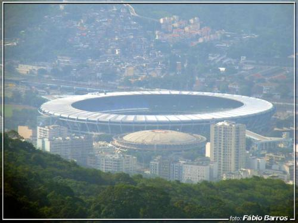

В преддверии финала ЧМ 2010 по футболу
Сегодня, 10 июля 2010 Уругвай играет в ЧМ за третье место с Германией. А 16 июня 1950 года должен был состояться финальный матч Кубка Мира по футболу между Бразилией и Уругваем.
Хозяйкой Чемпионата была Бразилия. И бразильская сборная не подвела. Красиво и безупречно сыграла все матчи Кубка, буквально стирая соперников в пыль, не то что в этом году (К тому времени в ФИФА уже вступило СССР, но на том чемпионате мира наша сборная ещё не выступала).
В то же время, Уругвай, команда, между прочим, уважаемая (2–х кратный Чемпион Мира,11–ий победитель Кубка Америки), ели–ели сумел доковылять до финала. Всем было ясно – Уругвай не жилец.
Утром 16 июня Рио–де–Жанейро проснулся празднично разукрашенным, повсюду виднелись плакаты с приветствиями победителям – бразильцам, конечно. Школы самбо заканчивали оттачивать последние «па», готовясь к грандиозному карнавалу, запланированному на эту же ночь, газеты, еще вчера, набрали срочные выпуски с победными реляциями „нашим бравым мучачос“. Предполагалось начать их продажи сразу же после окончания игры. Комментаторы пили сырые яйца. Проститутки обещали обслуживать за полцены всю ночь.
Были отлиты памятные золотые медали футболистам и сочинен прекрасный гимн, приуроченный к победе команды в белом (да, да в белом), который должен был прославить Бразилию в веках.
В общем, спорили только об одном, с каким счетом будет разгромлен Уругвай.
Матч состоялся в специально построенном для такого случае ультрасовременном стадионе – Maracana 
Этот огромный стадион, который мог принять чуть ли не 200 тысяч болельщиков (наши Лужники — слабое подобие левой руки Мараканы и вмещают только половину от бразильского — «всего» 100,000 зрителей, представьте размеры), был идеальным местом отметить победу. Так как строили в большой спешке, его не успели покрасить, но сообразительные власти города заявили, что это такая фича. Мол, было решено подождать и уж после, покрасить его в цвета победителя.
Перед игрой, тренер уругвайцев выразился в том смысле, что главное участия, а не победа. Так что будем играть в защите и может быть нам и повезет. С чем не согласился капитан команды, после чего произнес речь, которая сильно воодушевила игроков и настроила их на боевой лад.
Матч начался, как и предполагалась, полным преимуществом хозяев, Бразилия просто загнала уругвайцев к их воротам и методично расстреливала. Но все же уругвайцы в первом тайме устояли.
После перерыва, на второй минуте, бразильцы забивают гол, все, апофеоз, стены дают трещины, бесплодные женщины рожают, импотенты испытывают оргазм, безногие ходят, слепые прозревают. Вувузел, слава богу, еще не придумали.
И вот сейчас и начинается наша история.
Уругвайцы, стиснув зубы, бросаться в атаку и уже через десяток минут выравнивают счет.
На стадионе тишина. Но тут же новый взрыв радости. Так как даже ничья дает Бразилии Кубок
А на 34 минуте происходит невероятное – Уругвай забывает снова. Счет — 2:1.
И тут, как рассказывают очевидцы, на стадионе до конца матча стоит полная, абсолютная, страшная тишина, та тишина, которую только могут создать 210 тысяч человек…
Бразилия бьется как лев, но все бесполезно. Финальный свисток. Уругвай – Чемпион Мира.
Многие болельщики, от отчаянья, убились, бросившись с верхних трибун стадиона. Еще немало совершили самоубийство вне стадиона. Нация была уничтожена.
Именно после этого матча, форма сборной Бразилии стала зелено–желтой, так как белая стала ассоциироваться с самым большим национальным унижением в истории.
Игроки были преданы остракизму. Никогда больше они не сыграют за сборную, большинство, в тот же день, добровольно ушли из футбола, а само поражения стало нарицательным в Латинской Америке и получило названия «maracanazo» http://www.youtube.com/watch?v=1uvGXdAlq3o&feature=fvw
Но власти города сдержали слово. Maracana была покрашена в голубой цвет. Цвет сборной Уругвая.И так есть по сей день.
Но позор может быть смыт. Для этого Бразилия должна выиграть финал Кубка мира на этом же стадионе.
И по этому, не случайно, именно на Маракане будет сыгран финал 2014 года…
По материалам вики & дёти